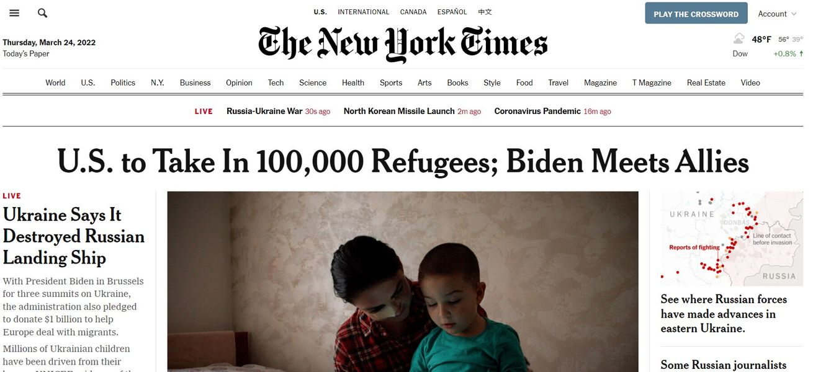

Timeline photos
I think you're going to have a more difficult time accusing me of being racist (as some of you did when I came out against the 150 Afghan Refugees that came into Akron) maybe you'll just have to resort to calling me anti-immigrant.
BUT I'M HERE TO TELL YOU: Akron men, women and children cannot find housing in their own city. AMHA vouchers are expiring left and right because there is a limited supply of housing.
And eviction rates are expected to meet or exceed levels before COVID when Akron was the #1 city for most evictions in Ohio.
BUT WATCH WHAT'S GOING TO HAPPEN: Our current mayor is going to put out a press release soon to let you know how excited he is that we will be taking a couple hundred Ukrainian refugees into Akron.
These immigrants will move to the front of the bus as multi-generational Akronites get pushed to the back.
HE'S EXCITED because his entire plan is to push poor people out of Akron and get "reputable" people in his city.
#sageformayor